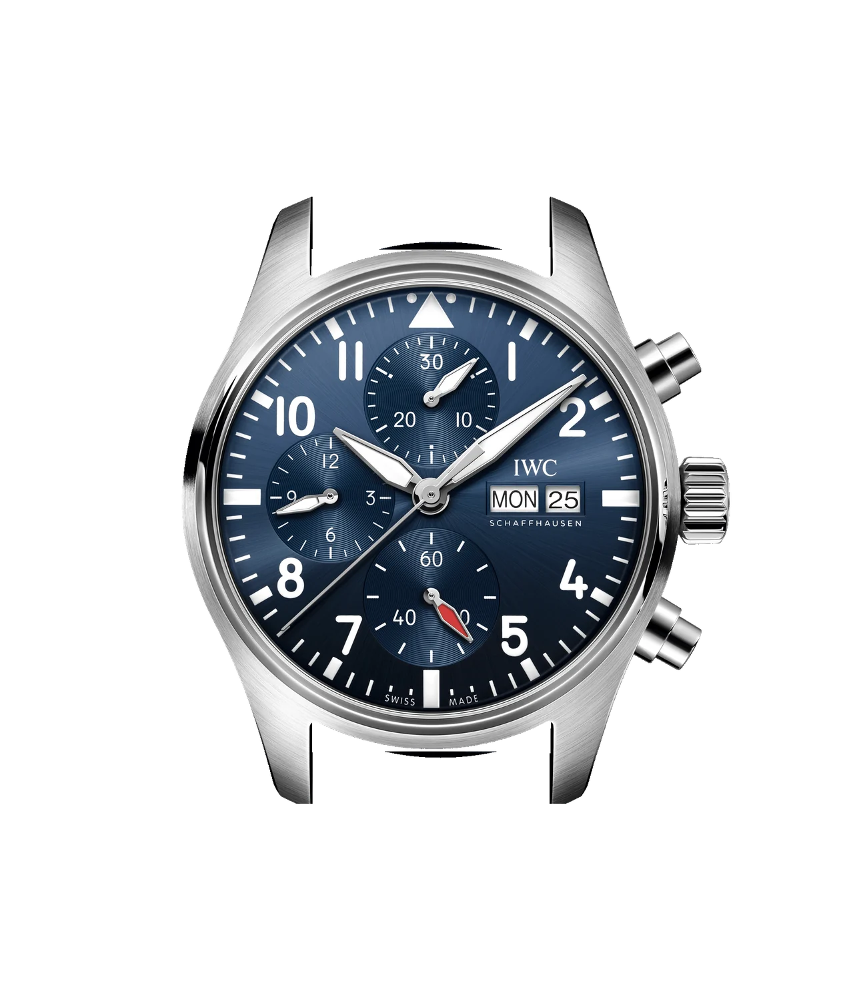
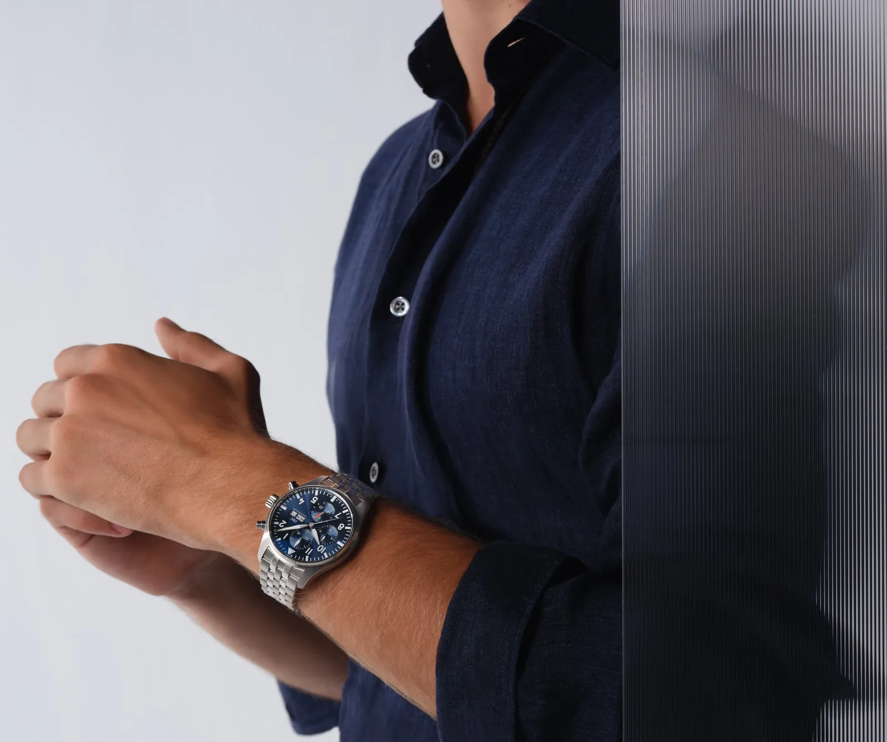
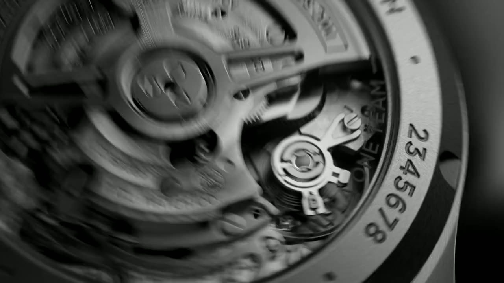
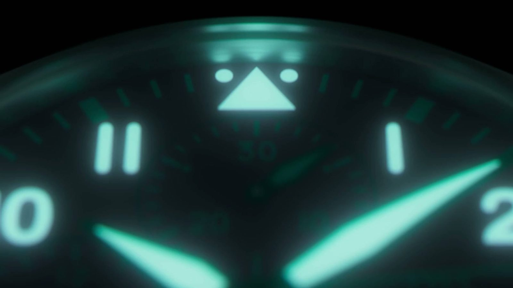
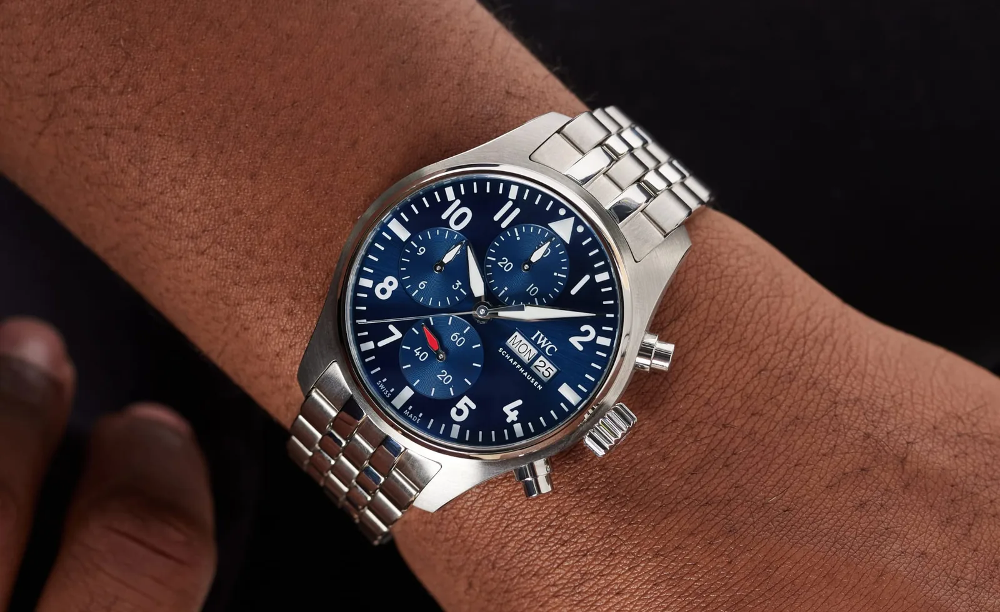

Pilot’s Watch Chronograph 41
The Pilot’s Watch Chronograph 41 wins you over with versatility and a sporty design.
Blue dial, blue calfskin
CHF 6’700VAT included · IW388101
Complimentary delivery in 3 to 5 business days
Overview
With its cockpit instrument-inspired design, the Pilot’s Watch Chronograph is celebrated for its powerful durability and extreme versatility.
- Reference
- IW388101
- Dial colour
- Blue
- Diameter
- 41 mm
- Chronograph function with hours, minutes and seconds
- Small hacking seconds
- Day and date display
Case
- Height
- 14.5 mm
- Water resistance
- 10 bar
- Crown
- Screwed-in
- Case back
- With synthetic sapphire crystal
- Strap width
- 20 mm
- Buckle width
- 18 mm
Materials
-
Case
Stainless steel
Stainless steel is robust and durable. The material is also highly resistant to corrosion and thus unaffected by sweat, moisture and seawater splashes.
-
Glass
Sapphire glass
With a hardness of 9 on Mohs’ scale, it is harder than any other type of glass and topped only by diamond. The antireflective coating reduces glare and gives the wearer a crystal-clear view of the dial.
-
Strap
Blue calfskin strap
Leather impresses with a timeless and stylish look and complements all outfits and occasions. It is strong and, at the same time, breathable and supple.
Movement
Clear sapphire case display on the back to witness the complete movement.
- Calibre
- 69385
- Type
- Automatic, self-winding
- IWC-manufactured
- Yes
- Power reserve
- 46 hours
- Frequency
- 28,800 vph (4 Hz)
- Components
- 242
- Jewels
- 33
Pilot’s Watch Chronograph 41
Features
-
Chronograph
Hours, minutes and seconds. Start and stop at 2 o’clock, reset at 4 o’clock.
-
Luminescent hands and numerals
The dial stays readable after the lights go out.
-
Calibre 69385
IWC-manufactured and self-winding, with a 46-hour power reserve.
-
Water-resistant to 10 bar
Screw-in crown, sapphire glass on the dial and the case back.
EasX-CHANGE®
Blue calfskin
Press the button on the underside of the strap to release it, then click in the next one. No tools needed.
Find your strap
03 / 06
Specifications
41millimetres across. The 41 in its name.
10bar. Screw-in crown, sapphire glass front and back.
14.5millimetres high,
20between the lugs.
242components in calibre 69385, made by IWC. 33 of them are jewels.
46hours of power reserve, fully wound.
About the collection
90 years of Pilot’s Watches
Since the first Special Pilot’s Watch, the brief has stayed the same: a dial you can read at a glance, in any light, on a watch built for the cockpit.
Discover the collection1936
Gallery
Up close and on the wrist




More Pilot’s Watches
Collections
01 / 05
-
Since 1936
Pilot’s Watches
Conceived as navigation instruments for aviators, IWC Pilot’s Watches are the quintessential tool for modern-day explorers.
Discover the collection -
Since 1939
Portugieser
Inspired by a nautical instrument, the Portugieser has evolved into a timeless yet dynamic paragon of understated elegance.
Discover the collection -
Since 1955
Ingenieur
Based on Gérald Genta’s original design, the modern Ingenieur features the ergonomics and finishing of a versatile luxury sports watch for the 21st century.
Discover the collection -
Since 1967
Aquatimer
High water resistance and safety features make the Aquatimer a reliable instrument for diving. Thanks to its robust build and sporty design, it is also suitable for adventures on land.
Discover the collection -
Since 1984
Portofino
Notable for its freshness and purity, the Portofino can easily be paired with a casual or elegant outfit. It is the perfect understated wristwatch for everyday wear.
Discover the collection
Services
-
Complimentary standard delivery
All orders come with complimentary standard delivery. Watches or accessories will be shipped to your home or professional address within 3 to 5 business days.
-
Up to 8 years of warranty
We offer a complimentary 6-year extension to our standard 2-year International Limited Warranty, bringing the total coverage to 8 years.
-
Personalisation options
For select models, we offer engraving services to add a specific date or name on the case back.
-
Watch expert personal shopping
For orders placed by telephone, our concierge shopping service is available to help you find the perfect watch.